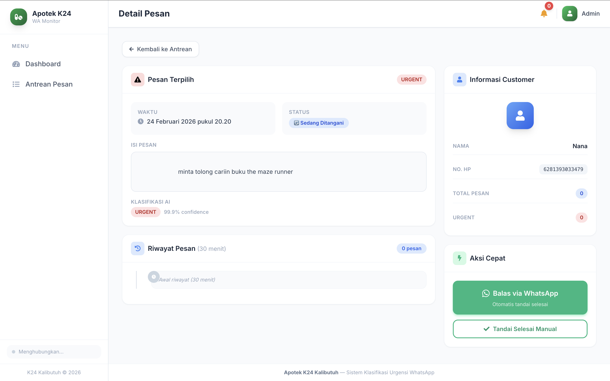

WhatsApp Message Urgency Classification
A FastText-based NLP system that classifies incoming WhatsApp messages by urgency level — helping a pharmacy client cut through chat noise and respond to what matters most, faster.

- Role
- ML + Full-stack Dev
- Client
- Pharmacy (SMB)
- Model
- FastText (fine-tuned)
- Status
- Completed
Background
A small pharmacy was drowning in WhatsApp messages — prescription refill requests, appointment inquiries, promotional spam, and casual chats all flooding the same inbox with no way to prioritize. Staff were manually scrolling through hundreds of messages a day, often missing time-sensitive requests from patients.
- Inbox flooded with spam and low-priority chats
- Urgent patient messages getting buried
- No system to surface what needs immediate attention
- Auto-classify messages into urgency levels
- Surface urgent chats on a priority dashboard
- Alert staff with repeat notifications until handled
ML Pipeline
FastText was chosen as the model backbone — it's lightweight, fast at inference, and reliable enough for small business use cases without needing heavy infrastructure. Since FastText is pre-trained, the pipeline focused on collecting domain-specific training data and fine-tuning it to the pharmacy context.
Gathered real-world WhatsApp message samples representative of the pharmacy context — covering prescription requests, appointment questions, complaints, spam, and casual messages.
Removed noise such as emoji-only messages, media placeholders, and duplicate entries. Text was normalized for consistent tokenization.
Each message was labelled into one of three classes: Urgent (requires immediate staff response), Normal (standard inquiry, can be queued), or Non-Urgent (spam, promotional, or irrelevant).
The pre-trained FastText model was fine-tuned on the labelled dataset. Because FastText is already pre-trained on large corpora, fine-tuning required minimal data and compute while still achieving reliable domain accuracy.
How It Works
The deployed system connects directly to the pharmacy's WhatsApp through Fontee webhooks. Every incoming message triggers a classification in real-time, and the result drives what appears on the staff dashboard.
Urgency Classes
Requires immediate staff response. Surfaces on the priority dashboard and triggers a repeat notification every 10 minutes until handled.
Standard inquiries that can be queued and addressed in order without time pressure.
Spam, promotional content, or casual messages with no actionable follow-up needed.
Dashboard & Notification System
Urgent messages are surfaced front and center, showing sender info and the message content at a glance. Clears automatically once all items are handled.
If urgent messages remain unresolved, the system re-alerts staff every 10 minutes — ensuring nothing critical gets missed during busy periods.
Each urgent message card has a one-tap shortcut that opens the conversation directly in WhatsApp, so staff can respond without any friction.
Works as a standard web app on desktop. On mobile, it's installable as a PWA — giving staff a native-like experience with push notifications on their phones.